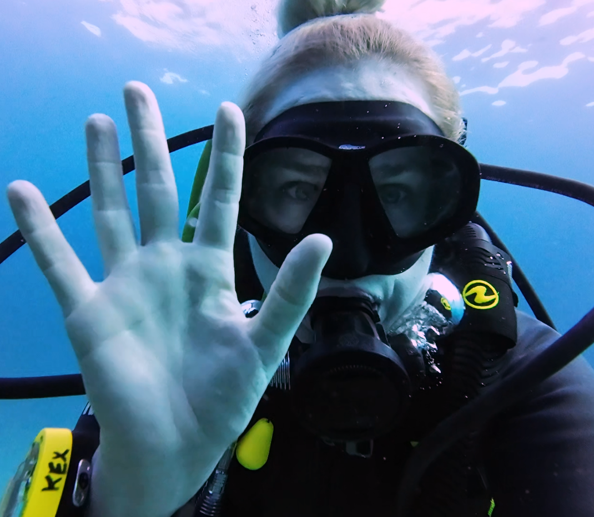

Thailand
In Thailand, I participated in a liveaboard scuba diving trip to the Similan Islands, a group of islands in the Andaman Sea designated as a national marine park since 1982. The area is known for its diverse marine life and coral reefs, and it’s considered one of the top diving destinations in Southeast Asia. A liveaboard involves staying on a boat for several days, which allows divers to access more remote dive sites that aren't reachable by day trips.
Exploring a reef where tuna hunt.
Underwater, I observed a variety of marine species, including tuna, parrotfish, pufferfish, starfish, angelfish, lionfish, scorpionfish, and a leopard eel. The coral formations ranged in shape and color, and many of the dive sites were in protected areas that are closed seasonally to allow coral and fish populations to recover. The experience offered both cultural exchange with people on the boat and firsthand exposure to one of the world’s most biodiverse reef systems.
Eel swimming.
Vermiculated Spinefoot.
Cleaner shrimp picking off dead skin from a nail bed.
